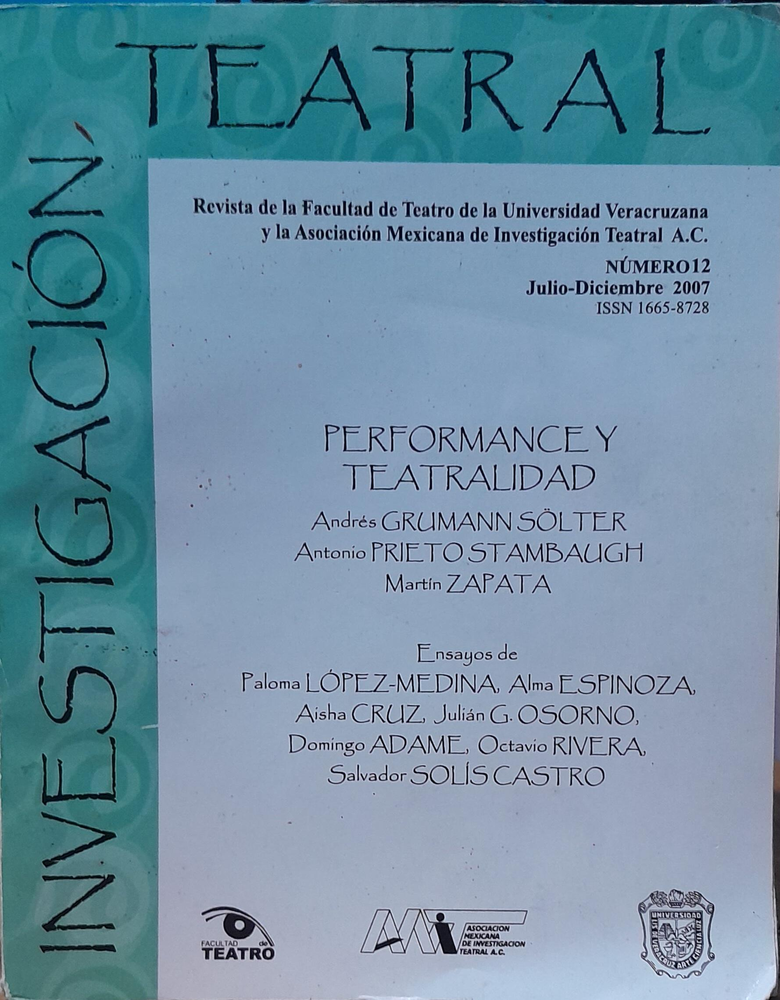
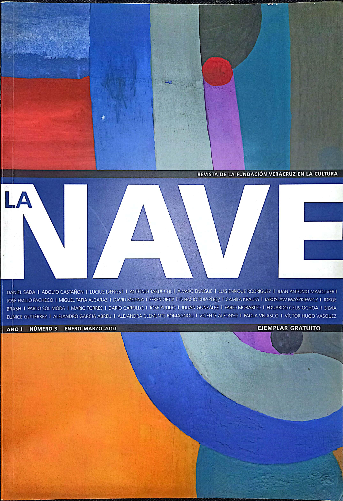

LIBROS (COMO AUTOR)
Julián Osorno. Ortografía a la mano. Reglas ejercicios, recomendaciones. Ediciones Artistik's, México, 2018, 184 pp.
Julián Osorno. Ortografía a la mano. Reglas, ejercicios, recomendaciones. Ediciones Artistik's, México, 2016, 208 pp.
LIBROS (COMO COAUTOR)
Julián Osorno y Rodolfo Mendoza (Coords). Antología del ensayo literario veracruzano, 1950-2010. Editora del Gobierno del Estado de Veracruz, Xalapa, 2014, 438 pp.
Julián Osorno y Juan Berdeja (Coords). Mirar no es como ver. Ensayos críticos sobre la obra de Efrén Hernández. Universidad Autónoma de Querétaro, Querétaro, 2018, 233 pp.
CAPÍTULOS (LIBROS)
José Julián González Osorno, «Poros y penias en La Paloma, el sótano y la torre de Efrén Hernández», en Elizabeth Corral y Norma Angélica Cuevas Velasco (Coords). Itinerario crítico. Ensayos sobre literatura mexicana. Instituto de Investigaciones Lingüístico-Literarias/Universidad Veracruzana (Col. Cuadernos), Xalapa, 2014, págs. 81-102. [Edicion completa, de libre acceso y fines no comerciales]
Julián Osorno, «Diálogos intertextuales en la cuentística de Efrén Hernández», en Julián Osorno y Juan Berdeja (Coords). Mirar no es como ver. Ensayos críticos sobre la obra de Efrén Hernández. Universidad Autónoma de Querétaro, Querétaro, 2018, págs. 69-85.
Julián Osorno, «Efrén Hernández a tres voces», en Julián Osorno y Juan Berdeja (Coords). Mirar no es como ver. Ensayos críticos sobre la obra de Efrén Hernández. Universidad Autónoma de Querétaro, Querétaro, 2018, págs. 211-217.
ARTÍCULOS (REVISTAS)
Julián Osorno y Gualberto Díaz, «El sitio: espacio y epifanía», en Amoxcalli. Revista de literatura hispánica: teoría, análisis y crítica. Benemérita Universidad Autónoma de Puebla, enero-diciembre, 2010, págs. 65-80.

Julián Osorno, «El agua, Dios y Nervo», en Texto Crítico, Nueva Época (Universidad Veracruzana), año XII, núm. 26, enero-junio, 2010, pp. 117-126.
Julián Osorno, «Efrén Hernández a tres voces» (entrevista), en Texto Crítico, Nueva Época (Universidad Veracruzana), año XII, núm. 24, enero-junio, 2009, págs 139-145.
Julián Osorno y Ricardo Pace, «Los orines del bien. Perspectiva irónica en la novela En algún valle de lagrimas», en Texto Crítico, Nueva Época (Universidad Veracruzana), año XII, núm. 23, julio-diciembre, 2008, págs. 87-107.

Julián Osorno, «Los rostros de la soledad. Comentario a una obra teatral de José Revueltas», en Investigación teatral (Universidad Veracruzana), núm. 12, julio-diciembre, 2007, págs. 87-100.
RESEÑAS
Julián Osorno, «Contra la verdad histórica», en Revista Mexicana de Estudios de los Movimientos Sociales, Vol. 7, Núm 1, 2023, págs. 190-192.
Julián Osorno, «La conquista de México y su uso en la historia», en Mexican Studies/Estudios Mexicanos, vol. 38, núm 3, fall 2022, págs. 517-520.
Julián Osorno, «Sobre mapas circulares. Lecturas contemporáneas de Luis Jorge Boone», en La palabra y el hombre. Revista de la Universidad Veracruzana, tercera época, núm. 37, julio-septiembre, 2016, p. 76.

Julián Osorno, «Atanasio D. Vázquez, fotógrafo de la posrevolución en Veracruz» de Elissa Rashkin, en Ulúa. Revista de Historia, Sociedad y Cultura. Instituto de Investigaciones Histórico-Sociales/Universidad Veracruzana, núm. 28, 2016, págs. 253-256.
Julián Osorno, «Antología del cuento mexicano de la segunda mitad del siglo XX» de Mario Muñoz (Universidad Veracruzana, Xalapa, 2009, 260 pp. [Col. Biblioteca del Universitario, 29]), en La palabra y el hombre. Revista de la Universidad Veracruzana. Universidad Veracruzana, Xalapa, tercera época, núm. 13, verano de 2010, págs. 68-69.

Julián Osorno, «Un tiempo suspendido. Cronología de la vida y la obra de Juan Rulfo» de Roberto García Bonilla (Conaculta, México, 2008), en La Nave. Revista de la Fundación Veracruz en la Cultura, núm. 3, enero-marzo, 2010, págs. 92-93.
Julián Osorno, «De eso se trata. Ensayos literarios» de Juan Villoro (Anagrama, Barcelona, 2008), en La Nave. Revista de la Fundación Veracruz en la Cultura, núm. 1, julio-septiembre, 2009, págs 93-94.